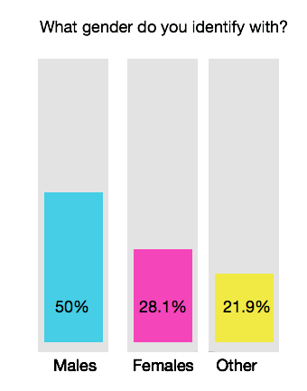
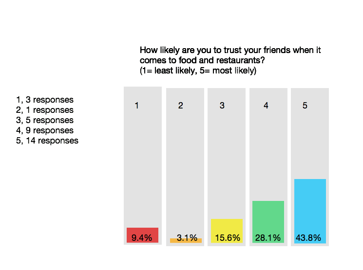
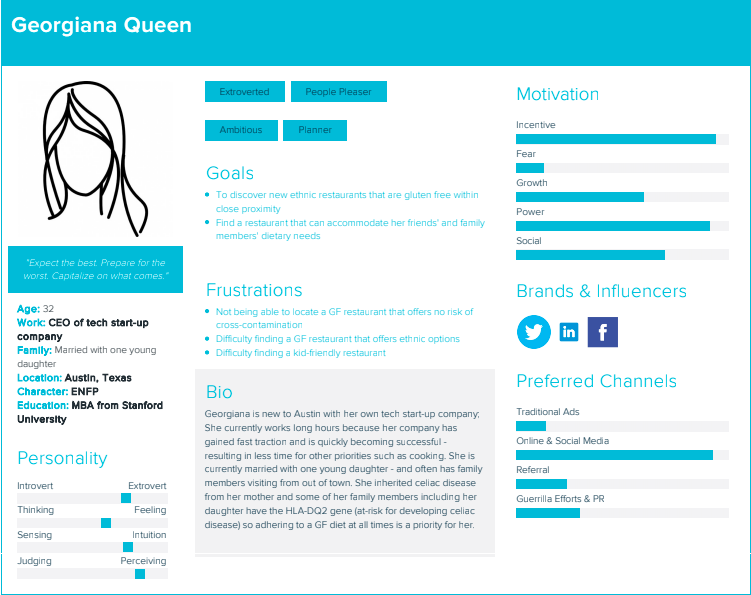
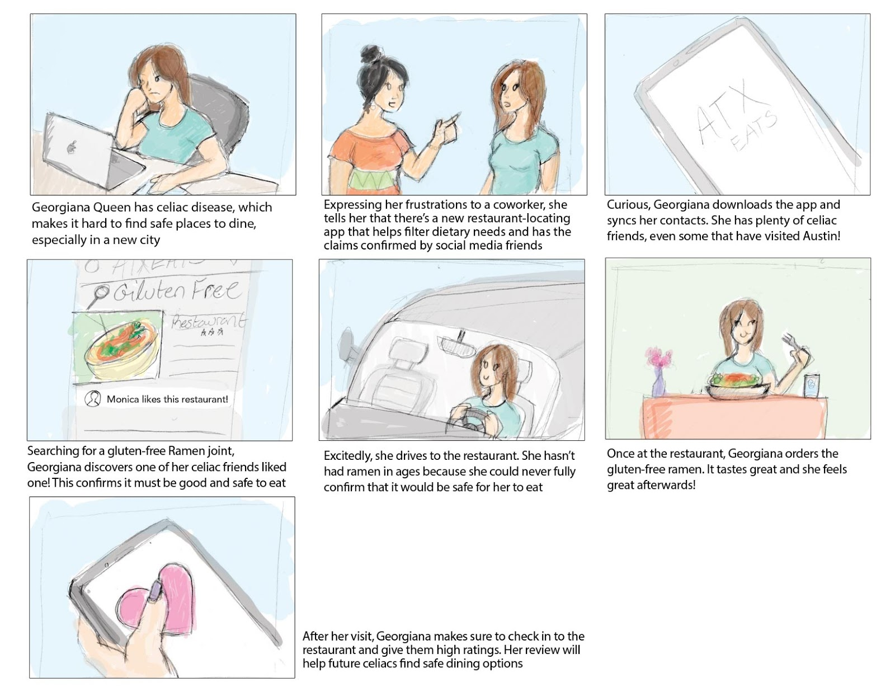

Over the course of two weeks, my group and I interviewed approximately 25 individuals. Our research revealed that users desired a new way to do recommendations that could easily be incorporated into a restaurant app. We created the platform so that users could exercise these features (new recommendation options) to help them make their dining choices easier, while also providing a platform for restaurants to advertise themselves. Although creating an experience for out of town visitors was the main goal, in our Discovery phase, we worked on the idea of combining features from other popular apps and utilizing those ideas in our designs.
Group Members: Jeffery Aselu, Kailyn Brush, Marisa Cullen, and Gaby Martinez
Discover
The project had a central theme around eating in Austin. Austin is very diverse in culture and offers many unique places to eat. My team and I were interested in the overall problems faced by non-native Austinites when it came to finding those local dining experiences. All of the team members, as well as the first round of interviewees, expressed problems with trying to find cheap, good, unique restaurants in Austin, while also keeping in mind the parking, atmosphere, location, and bookings.
From there we had a lot of problems to delve into.
Survey Results


Almost 90% of our interviewees indicated that they trust their friends’ recommendations more than an app. Their responses also suggested that a lot of other factors that played into their decision to eat at a certain restaurant (i.e. food restrictions, budget, parking, etc.). In the next focus group, we homed in on this behavior. We also looked into other apps that people used for restaurant recommendations and what features they liked best from them.
Because our team had come up with a viable solution for finding local restaurants rather quickly, we decided to delve into what people really want to see when looking at reviews. We then did more interviewing and surveying around these additional categories:
Booking through the app
Conveying statistics on the restaurant
Show Friend Reviews and/or have an option for All Reviews
Giving feedback after the user’s dining experience
Define
The team discovered multiple pain points for users and the next steps were to determine the hierarchy between them, and the best way to implement them.
Problem Areas
Booking through the app
About half of the interviewees said they like to make bookings, preferably through the app if possible. Our main concern with this option was whether or not it was important enough to try to configure it into our solution.
Conveying statistics on the restaurant
Our main decision on this point was trying to decide whether or not to stick to traditional rating systems like stars, or see if there was a better way to do it that would make more intuitive sense to users.
Show Friend Reviews and/or have an option for All Reviews
Because our research indicated that people are more likely to trust their friends than random reviews online, we played with the idea of only showing friends’ reviews for restaurants. However, we had to keep in mind that there would be cases when there wouldn’t be any reviews in that situation.
Giving feedback after the user’s dining experience
The app feature based on Friend Reviews meant that we needed to make the process of leaving feedback more attractive so that users would complete the process. This feature focused on the best way to do that.
Character Profiles
To match our interviews/survey results, we created a character profile for Georgiana Queen to best match the goals of our target user.

Our research and chosen target user, led us to the following problem statement:
Develop
Having defined the problem, we moved into developing the solution.
The Process:
Journey Map
We extracted steps from a user journey in which our persona would need a tool to help her find a good restaurant that fit her dietary needs. We then used those steps to build our user flow. The team then translated each step in this flow into sketches and also incorporated into our storyboard.
Storyboard
Based off of the User Journey steps we created the following storyboard:

User Flows
We went through three iterations and two user testing sessions before reaching our final designs. Below are some components and their evolution, with notes concerning feedback from our testing sessions.
Paper Sketches
Mobile
A&B Testing
For the A&B testing, we used the low-res wireframes we created. Users were very candid about their concerns: an overall distaste for the star system, and a good response to the review system (both in giving and receiving). Several users also made it clear that the icons were a little hard to understand which led to a change of design for those as well.
"I totally trust my friends to tell me if a place is bad, so this is great."
"I love the little food icons! Look at the little taco!"
"Dang. This quiz is only 3 questions, super easy.""
Deliverables
High-Res Wireframes
Our color scheme came from a popular Austin mural, but also made the app feel fresh and upbeat.
There is no one solution to any problem, just as there is never just one solution. People and sites continue to evolve and change. The following is what I would do if I were to continue to work on this project.
Moving Forward with this project:
Throughout this process, we had several ideas and solutions to several other problems. If I were to continue working on this project, my first step would most likely be to test our final design a little more extensively, but to also try to incorporate some of these ideas.